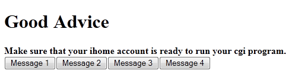
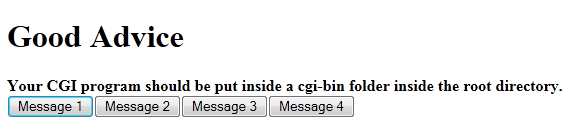
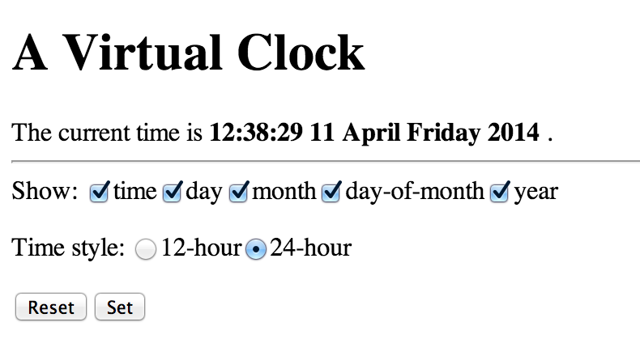
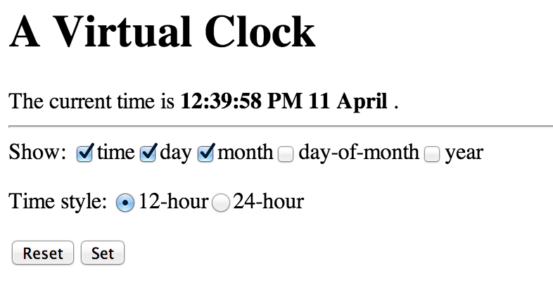
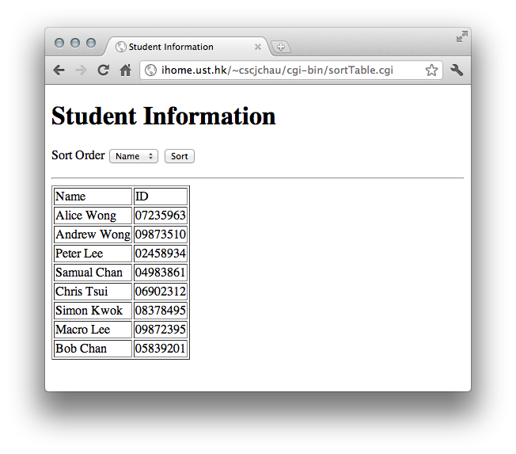
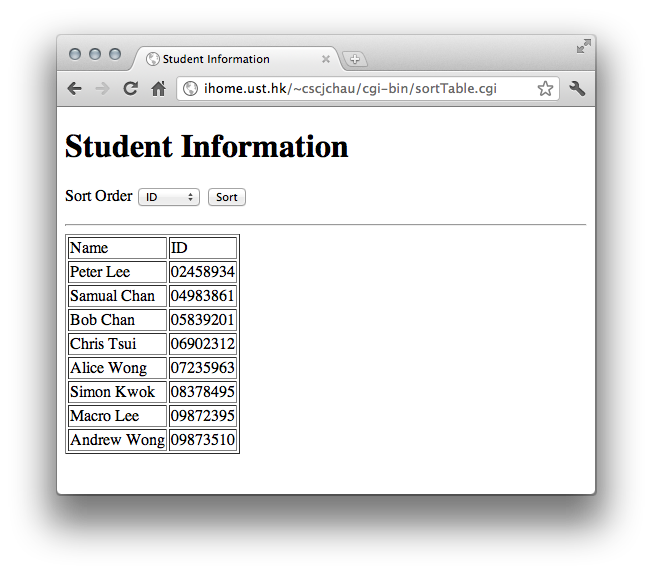

Practice: Good Advice & Upload your own CGI to ihome
We will practice developing a CGI program "Good advice", which acts based on button presses. And then we will learn how to upload it to build your own ihome website. Now we have four pieces of good advice(sentences) and each of them corresponds to a button. When the "Message 1" button is pressed, the first sentence will be shown. And it's same for the remaining 3 buttons.
The results should be like this:
Message 1:

Message 2:

This CGI program can be viewed in here.
Practice: Interactive Clock
We will practice developing an interactive clock. It displays current time as required. The user can choose in which form the time is displayed : 12 hour or 24 hour. Also, it allows users to decide which part to display as illustrated in the picture below.
The results should be like this:
Example 1:

Example 2:

This CGI program can be viewed in here.
Homework: Displaying Data with different order
Your task for this lab is to develop a CGI program called sortTable.cgi which display students' information (name and ID) stored in this text file and allow user to view the information in different sorting order (sort by name or ID, chosen by a popup menu and a submit button). You may put the text file in the same directory (cgi-bin) with your CGI program. You may also assume all students' names and ID are unique. Finally display the information using an HTML table.The below are some screenshots of the finished CGI page.
Students displayed in the original order same as the text file:

Sorted by Name:

Sorted by ID:

A sample CGI program can be viewed in here.
Submission
Please submit you sortTable.pl using CASS on or before 10:00pm, 25-April-2015. You should check make sure your program will run on the iHome server environment. Add a comment line near the top of sortTable.pl to show your script address on ihome.ust.hk.
Any inquiry please contact your TAs by email (shuaa@ust.hk ).